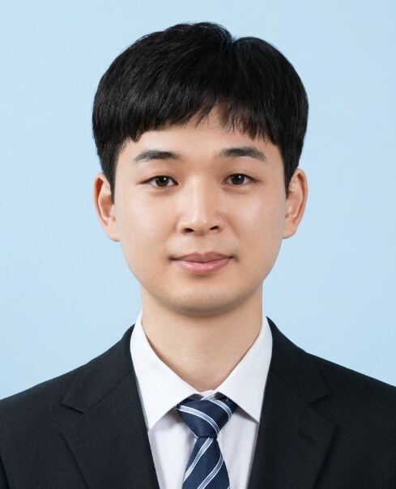

이준호
사람의 성장을 돕는 HRD
사람의 성장을 이해하고, 데이터로 진단하며,
조직에게 서비스를 제공하는 이준호입니다.
소개
교육 현장에서 시작한 관심을 사람과 조직의 성장으로 넓혔습니다.
대일외국어고등학교에서 학생 상담과 학급 운영을 경험했고,
Woojin Math에서는 조교 교육, 채용과 성과관리에 참여하며
개인의 성장과 조직 운영을 함께 바라보는 관점을 쌓았습니다.
Data.
Growth.
커리어 프로필
학교와 연구실에서 교육 운영, 상담과 조교 관리 경험을 쌓았습니다.
경력
Woojin Math
2024.03 — 현재
대한민국 1타 메가스터디 강사 연구원
- 신규 조교 온보딩 및 직무교육
- 답변 품질 점검과 교육과정 개선
- 채용, 평가와 조교 운영
대일외국어고등학교
2022.03 — 2024.02
전국 단위 2위 외고 수학교사
- 300명 이상의 학생 및 학부모 개별 상담
- 학급자치서클 정기 운영
- 학부모 설명회 및 입시 설명회
학력
성균관대학교
수학교육과
- 전체학점 3.78 / 4.5
- 전공학점 4.14 / 4.5
자격증
- 투자자산운용사
- AFPK
- 컴퓨터활용능력 2급
- 워드프로세서 1급
SKILLS
프로젝트 및 활동
So, My Money?
사회인 축구팀 운영진
주요 경험
분류를 선택해 경험을 살펴보세요. 각 항목을 누르면 수행 내용과 관련 자료를 볼 수 있습니다.
업무 역량
학습 니즈 진단과 교육 설계
업무 데이터와 면담을 통해 필요한 역량을 파악하고 교육과 역할을 설계했습니다.
교육 효과 측정과 과정 개선
답변량과 오류 유형을 확인해
교육 내용과 피드백 기준을 개선했습니다.
AI 품질 기준과 협업
AI 답변 품질 기준을 구조화하고
외부 업체와 개선 우선순위를 조율했습니다.
Why Hyundai AutoEver
현업의 문제를 학습 니즈로 전환하고,
교육이 실제 업무 성과로 이어지도록 설계하겠습니다.
현대오토에버는 직무와 기술 역량을 진단하고, 구성원에게 필요한 학습을 제공한 뒤
실제 업무에서의 변화를 확인하는 HRD 체계를 운영하고 있습니다.
저는 답변량, 오류율, 근무시간과 1:1 면담을 통해 구성원의 어려움을 진단하고,
개인별 교육과 역할을 조정했습니다. 반복 오류를 분석해 교육과정을
개선하며 학습이 업무 성과로 이어지는 과정을 경험했습니다.
외부 AI 업체와 답변 품질 기준을 설계한 경험을 더해,
현대오토에버의 AX 교육이 실제 활용과 품질 향상으로 연결되도록 기여하겠습니다.
학습 니즈 발굴 / L&D 설계 / 효과 측정 / 조직개발
채용 / 평가 / 유지 / 인력계획
